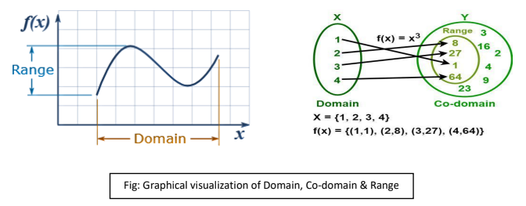
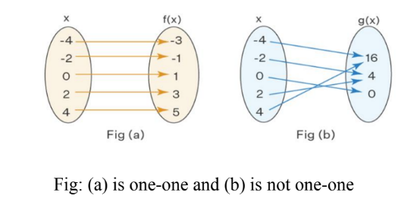
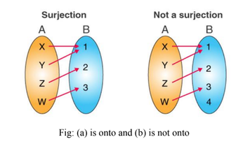
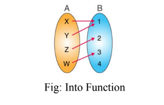

Constant is a symbol which retains the same value throughout a set of mathematical operation.
Constant are of two types, such as
(1) Absolute Constant: y = 3x + 7
(2) Arbitrary Constant: y = mx + c
A variable is a quantity which is capable of taking various numerical values.
Variables are of two types, such as:
(1) Dependent Variable.
(2) Independent Variable.
If X and Y are two non-empty sets and f is such a rule that gives a unique y ∈ Y for each x ∈ X then f is called a function from to the set X to the set Y. It is denoted by f: X → Y.
The domain of a function f is the set of all allowable input values. It’s also called the pre- image set.
The range of a function f is the set of all output values produced by f. It’s also called image set.
Let f: X → Y be a function. If distinct element of X has distinct images in Y, then the function is called one-one or injective.
Let f: A → B be a function. If all elements of set B are the Images of the elements of A, then the function is called onto or surjective function.
Let f: A → B be a function. If there exists even a single element in B having no pre-image in A, then such function is called into function.
